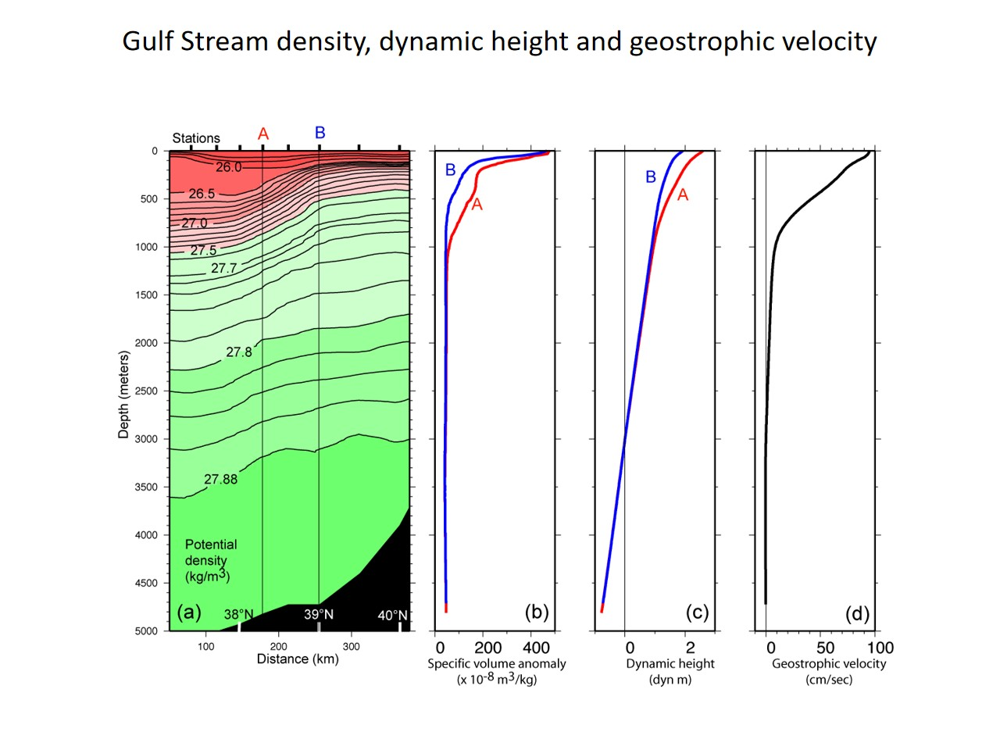

地转、Ekman 与位涡
\[f=2\Omega\sin\varphi\]
\[u_g=-\frac{g}{f}\eta_y,\qquad v_g=\frac{g}{f}\eta_x\]
\[V_{\mathrm{Ek}}=\frac{\tau}{\rho_0f}\]
\[q=\frac{\zeta+f}{H}\]
教材第7章 §7.2–7.8；S7 补充材料
我的解释
地转是压强梯度与科氏力的主平衡；密度梯度给热成风切变；Ekman 输运是风应力的表层响应；位涡把厚度、相对涡度和行星涡度放进一个守恒关系。
与课堂对照
第6讲用 30°N、\(0.2 m/100 \mathrm{km}\) 算 \(v\approx 0.269 m/s\)；教材从动量方程推到 Sverdrup 和西边界流。差异：课上先判方向，教材再给完整推导。
我的延伸
CMEMS DUACS 地转流、湾流断面；S7 补充材料。
深入：地转与位涡的适用条件
海面坡度对应水平压强差。北半球 \(f > 0\)，海面向东升高时 \(v_g > 0\)，流向北；压力梯度力指向西，科里奥利加速度指向东。流速与加速度单位不同，不能把速度箭头当作力来相加。
位涡 \(q=(\zeta +f)/H\) 中，相对涡度、行星涡度与水层厚度共同决定层模型的位涡。在无摩擦、无外加位涡源且满足层模型假设时，水柱伸长会要求绝对涡度随之增大，才能保持比值；位涡守恒不是“每一点 \(\zeta \) 不变”。
湾流断面（教材 S7 图 S7.20，PDF p.37；表 S7.3，p.38）：站距 78.0 km、纬度 38.65°N、表层东向流速 \(94.83 \mathrm{cm}/s\)；计算假设 3000 m 为无运动参考面，不能把曲线解释成直接流速仪测量。
